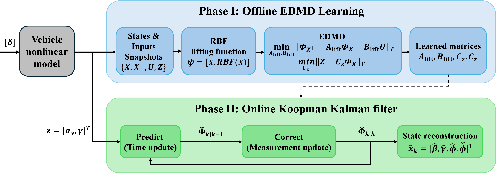
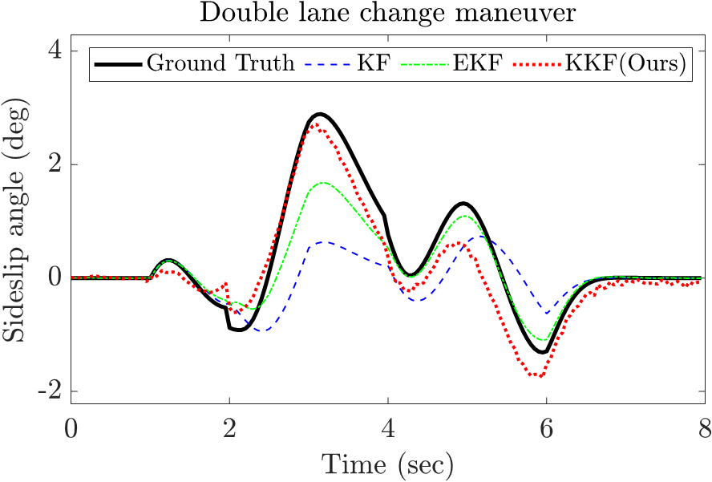
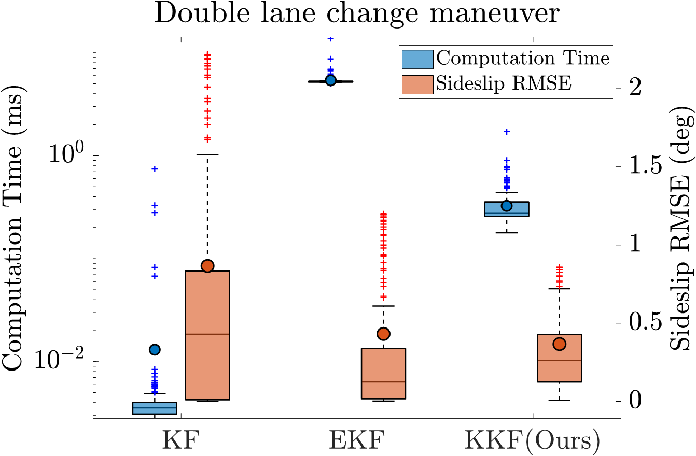
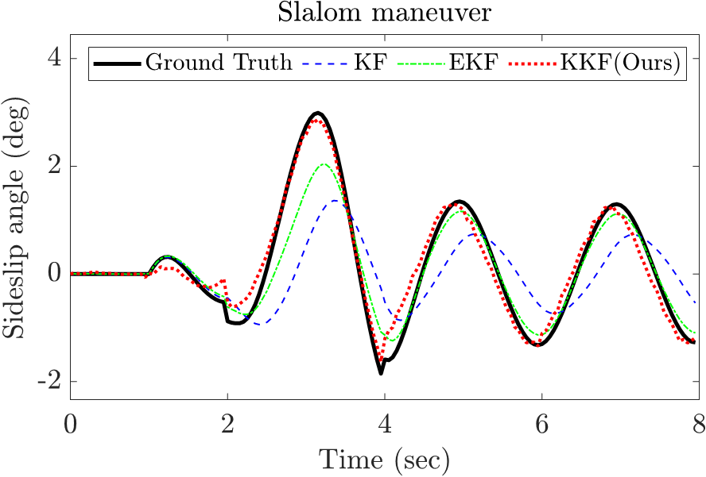
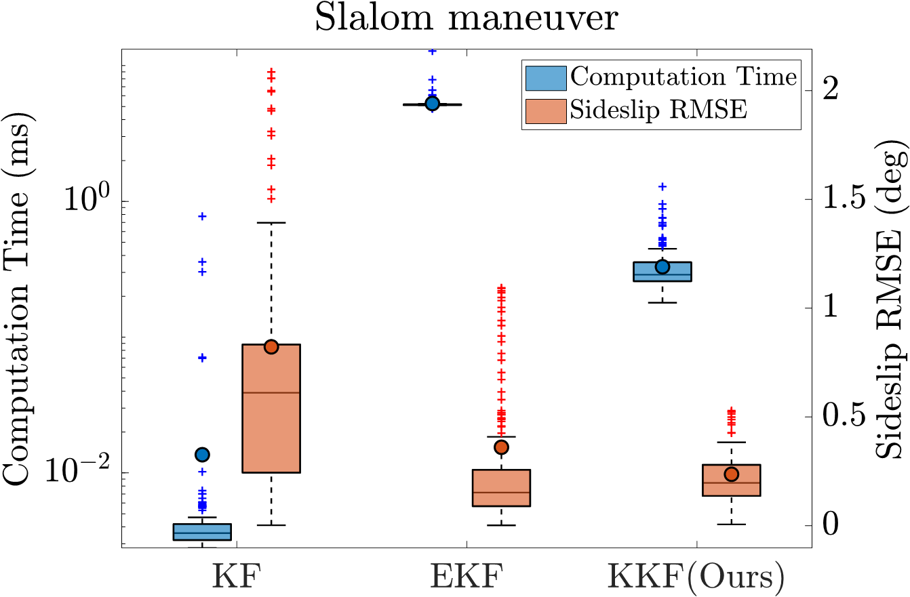
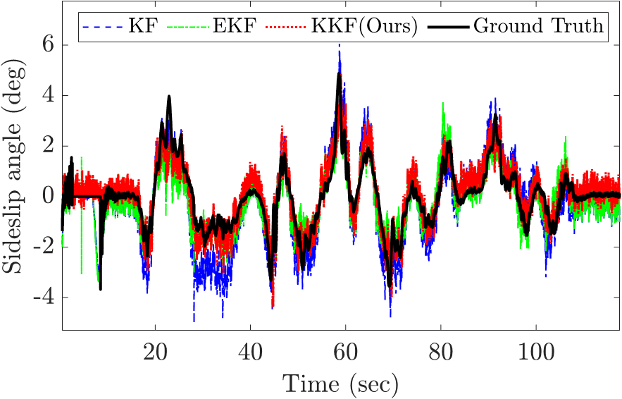
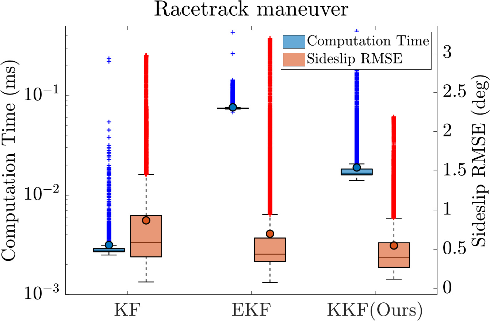

This paper proposes a Koopman Kalman filter (KKF) for real-time vehicle sideslip angle estimation under nonlinear vehicle dynamics.
The standard Kalman filter is computationally efficient but limited in nonlinear driving conditions, whereas extended Kalman filters improve accuracy at the cost of repeated Jacobian linearization. The proposed KKF uses extended dynamic mode decomposition to obtain a finite-dimensional Koopman linear representation of the nonlinear dynamics and measurement model, enabling linear Kalman filtering in a lifted state space. The method is evaluated in double lane change, slalom, and racetrack scenarios against KF and EKF estimators. Results show that the KKF achieves the lowest sideslip angle RMSE in all cases while significantly reducing computation time.
In double lane change and slalom maneuvers, it reduces RMSE by 15.1% and 34.4% compared with the EKF, with approximately 94% lower computation time. In the racetrack scenario, it improves RMSE by 36.9% over the KF and 21.5% over the EKF while operating about four times faster than the EKF. These results demonstrate the effectiveness of the proposed KKF for accurate and efficient real-time vehicle state estimation.
Schematic architecture of the proposed Koopman Kalman Filter (KKF) framework for vehicle state estimation. The framework is divided into two distinct operating stages: Phase I (Offline EDMD Learning) and Phase II (Online Koopman Kalman Filter). In Phase I, time-series data snapshots ({X, X+, U, Z}) are gathered from a high-fidelity nonlinear vehicle model. These physical variables are mapped into a high-dimensional linear subspace using a Radial Basis Function (RBF) lifting mapping, ψ(x) = [xT, RBF(x)T]T. Extended Dynamic Mode Decomposition (EDMD) is then executed by solving least-squares optimization problems under the Frobenius norm ||•||F to identify the global linear matrices (Alift, Blift, Cz, Cx). In Phase II, the learned matrices are embedded into a linear-like Kalman filtering pipeline. Real-time sensor inputs are processed through standard Predict (Time update) and Correct (Measurement update) loops without requiring burdensome online Jacobian evaluations. Finally, the corrected lifted state Φ̂k|k is mapped back to reconstruct the unmeasurable nonlinear physical states, yielding the estimated state vector x̂k = [β̂, γ̂, φ̂, φ̂̇]T.

We designed the evaluation around extreme driving scenarios in which the road friction coefficient changes over time: double lane change, slalom, and a racetrack with a constant road friction coefficient. We compare the KKF against the KF and EKF. The KKF was trained offline using a range of road friction coefficients, while for a fair comparison, the KF and EKF were given the known road friction coefficient as an input. All scenarios were validated through 300 Monte Carlo simulations.
In the double lane change scenario, the KKF provides precise sideslip angle estimation at around 2–4 seconds, where the road friction coefficient changes rapidly, showing lower error compared to the KF and EKF. In the subsequent 4–6 second interval, where the road friction coefficient again changes from 0.25 to 0.55, the estimation error of the KKF is observed to be higher than that of the EKF. In terms of computational load, the linear KF has the lowest burden, the EKF the highest, and the KKF remains at an intermediate level.


| Method | Sideslip RMSE (deg) | Average Computation Time (ms) |
|---|---|---|
| KF | 0.8659(±0.6655) |
0.013 |
| EKF | 0.4318(±0.3527) ↓50.1% (vs. KF) |
5.3934 ↑41,388% (vs. KF) |
| KKF(Ours) | 0.3668(±0.2247) ↓57.6% (vs. KF) ↓15.1% (vs. EKF) |
0.3258 ↑2,406% (vs. KF) ↓94% (vs. EKF) |
In the slalom scenario, the KKF exhibits low estimation error throughout all segments. This is attributed to the characteristics of the radial basis functions (RBF) used in the lifting process of the Koopman model, which show high compatibility with the driving dynamics of the slalom that feature periodic and smooth curvature variations.


| Method | Sideslip RMSE (deg) | Average Computation Time (ms) |
|---|---|---|
| KF | 0.8223(±0.5212) |
0.0136 |
| EKF | 0.3608(±0.2764) ↓56.1% (vs. KF) |
5.2604 ↑38,579% (vs. KF) |
| KKF(Ours) | 0.2368(±0.1166) ↓71.2% (vs. KF) ↓34.4% (vs. EKF) |
0.33 ↑2,326% (vs. KF) ↓93.7% (vs. EKF) |
The Racetrack simulation features a highly complex driving circuit with multi‑regime speed profiles and varying corner radii. This comprehensive test demonstrates the long‑term stability of the Koopman‑based predictor, confirming that it maintains bounded estimation error without noticeable growth over extended operation.


| Method | Sideslip RMSE (deg) | Average Computation Time (ms) |
|---|---|---|
| KF | 0.8684(±0.4751) |
0.003 |
| EKF | 0.6975(±0.4011) ↓19.7% (vs. KF) |
0.076 ↑2,433% (vs. KF) |
| KKF(Ours) | 0.5478(±0.2847) ↓36.92% (vs. KF) ↓21.5% (vs. EKF) |
0.019 ↑533.3% (vs. KF) ↓75% (vs. EKF) |
@article{Park2025KKF,
author = {Sung-Jun Park, Do-Hee Kim and Kwangki Kim},
title = {Koopman Kalman Filter for Vehicle Sideslip Estimation},
journal = {},
year = {2026},
pages = {}
}